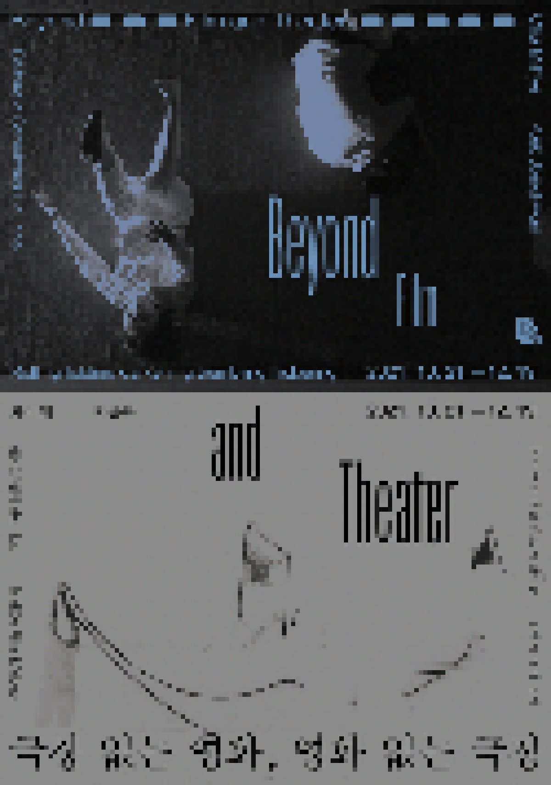

> title
극장 없는 영화, 영화 없는 극장
> content
페데리코 펠리니는 영화를 보러 극장에 가는 것이 어두운 곳에 앉아 명상적인 분위기 속에서 삶이 시작되는 것을 기다리게끔 하기 때문에 마치 자궁 속으로 돌아가는 것과 같다고 말한 바 있다.
영화관은 우리의 정신을 산란하게 하는 일상의 흔적 없이, 눈앞의 빛과 소리에 집중할 수 있는 공간이다. 영화관에 가는 것은 영화를 감상하는 것 이상의 사회적 의미가 있다. 하지만 팬더믹
이후 집 밖 외출이 제한되면서 각종
온라인동영상서비스 플랫폼을 이용한 영화감상이 급증했다. 영화제에서는 야외상영이나 자동차 극장 등 사회적 거리두기 속에서 대안적인 감상법이 시도됐다. 영화관은 그대로지만,
영화관을 둘러싼 환경이 변화하고 있는 것이다. 팬더믹으로 미술관이 휴관하고, 폐쇄된 공간에 허용되는 인원이
줄어들면서 미술관 내 영화관은 꽤 긴 시간 닫힌 채로 지내야만 했다. 상영 프로그램은 중단되고, 수용인원이
제한되고, 사회적 거리두기로 인해 나란히 앉는 것도 금지되었다. 자유로운 접근과 이용이 불가능하게 된 후 그곳에서 누리던 것들이 보이기 시작했다. 외부의 빛과 소리가 차단된 공간, 서로
다른 몸이 나란히 앉아 같은 영화를 함께 보는 경험, 감독의 얘기를 듣는 자리의 즐거움 등을 들 수 있겠다. 한편 영화관에서 상영되는 작품에도 변화가 일어나고 있다. 퍼포먼스, 문학 등
타 예술장르와의 적극적인 협업이 시도되고 있다. 영화관은 영화를 보는 장소 이상의 역할을 적극적으로 찾고 있다.
<극장 없는 영화, 영화 없는 극장>은 극장과 영화에 대한 차미혜, 백종관 두 예술가의 생각과 실험에서 출발한 프로그램이다. 차미혜의 <구름 주름 검정 파도 명멸하는>(2021)은
국립현대미술관 출입구에서 가장 먼 곳에 위치한 공간인 MMCA필름앤비디오 영화관에 주목한다. 작가는 영화를 상영하는 장소이자 환경인 ‘극장’을 영화의 주인공으로 등장시켰다.
퍼포머들의 움직임을 통해 공간을 읽어내고, 빛과 소리에 따라 변화하는 공간의 초상을 그려냈다. 상영 기간 중에 무용수 등의 퍼포머가 실제 극장에서 공간을 읽고 경험하는
퍼포먼스를 실행할 예정이다. 영상, 사진 등을 통해 공간의 섬세한 부분까지 읽어내는 일련의 작품을 발표해온 차미혜는 이번 작품을 통해 미술관 속 영화관이라는 공간의 안과
밖, 빛과 어둠, 소리와 침묵 사이를 가로지른다.
백종관의 <무덤이 웃기 전에>(2021)는 영화관과 영화를 분리하여 생각해보지 않은 입장에서 변화하는 극장과 영화에 대한 작가의 소회를 담은 작품이다.
영사기와 스크린이 있는 영화관이 아닌 스마트폰과 TV로 영화를 보고, 경제적 이유로 영화관이 실제로 문을 닫고 사라져가는 지금이 과거 영화(관)을 동경하고 사랑했던
사람들에게는 영화의 죽음 혹은 영화관의 죽음처럼 느껴질 것이다. 눈앞에서 한때 영화로웠던 것이 사라져가는 것을 바라보며, 또 끝났다고 생각되는 곳에서 새롭게 탄생하는
가능성을 지켜보면서 작가는 영화(관)의 과거와 현재, 미래를 오가는 생각의 계기를 제공한다. 지난해부터 영화뿐 아니라 연극, 무용 등 인접 분야에서도 폐쇄된 극장으로
인해 멈춰진 예술인들의 고민과 갈등을 기록해온 백종관은 영화뿐 아니라 여러 예술 장르를 통해 2021년, 지금 동시대의 상황을 기록하고 기억하고 있다.
